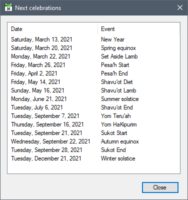
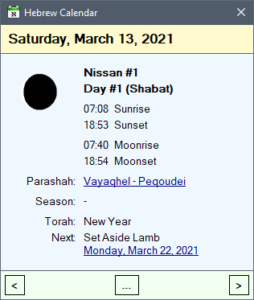
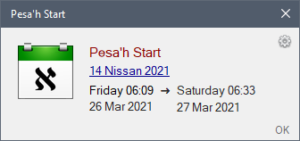
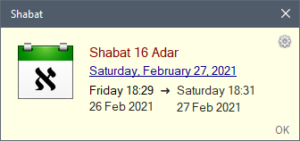
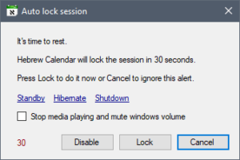
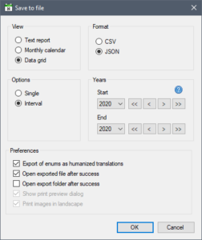

Overview
Ordisoftware™ Hebrew Calendar is a libre and open-source software written in C# that allows to generate a calendar based on solar and lunar cycles in order to determine the new year and the celebration times according to the Hebrew Torah, as well as to remind Shabbat and Pesach, Shavuot, Rosh Hashanah, Kippur and Sukkot festivities.
Functionnalities
- Generate a calendar with sun and moon rises and sets.
- View by tabular text report, visual month or data grid.
- Balloon tip from the Tray Icon to navigate between days with a summary.
- Event reminder for Shabat and celebrations.
- Indicate the weekly parashah.
- Search for a day, a month, or a celebration.
- Window listing the next celebrations.
- Window showing a board of celebrations by years.
- Window showing a board of new moons by years.
- Window showing a board of lunar months with descriptions.
- Window showing a board of parashot with descriptions.
- Window showing a board of celebration verses.
- Tools for the study of parashot and celebrations.
- Calculate the difference between two dates with bookmarks.
- Advanced dialog to save, copy to the clipboard and print the view and the data.
- Supported export file formats: TXT, CSV, JSON, PNG, JPG, TIFF, BMP.
- English, French.
Review
- Softpedia.com
Efficient and intuitive calendar and reminder app for the Hebrew Torah.
- Anxz.com
Powerful comprehensive Hebrew calendar software that any user can easily use.
Download
- Screen 1024x768 or higher.
- Works under Windows 7 x32/x64 or higher.
- Requires the Framework .NET 4.8 included.
- Uses SQLite 3.38.3 included.
- C# source code included.
- Kaspersky Antivirus and VirusTotal.com verified.
- SHA512: 6a535a9dfc43e971b6d89e34c5fb5582ec1ba2807f692854828c0cfc3915d248d05832a5f2109efe1566836df15ad404b9437dd4181d5d53b1fcaaa3a01c4cd6

Size: 33.2 MiB
Upload: 14 January 2019
Update: 15 November 2022
Last download: 15 November 2022
Total downloads: 4,389
What's new
Version 10
- Adar II was renamed in VeAdar.
- Added Shabat references in celebration verses board.
- Added options for the data layout in the monthly view : to put the lunar date on a single line before the ephemeris, to display the book name with references of parashah, to set text alignment, and to insert separator between sections.
- Added option to select data layout order and sections to show in the monthly view.
- Added options to display Hebrew names in Unicode chars or Latin transcription, and to keep Arabic numerals in case of Unicode.
- Fixed image printing.
- Some fixes and improvements.
- Optimized and refactored code.
- Updated web links.
- Changelog
Screenshots
 |
 |
|  |  |
 |
 |
|  |  |
|  |  |
|  | |
 |
 |
 |
 |
 |
 |
{kind=link}
{kind=link}
{kind=link}
{kind=link}
{kind=link}
{kind=link}
Videos
Frequently asked questions
What code analyzers are used in addition to Visual Studio?
What to do if the check update tells that the SSL certificate is wrong or expired?
The software verifies the validity of the certificate of the update server in addition to the SHA-512 checksum of the installation file before downloading and running it.
You can manually check the latest version available online in case of problem.
What to do if the application does not work normally despite restoring settings?
Use the Start Menu link:
Ordisoftware\Hebrew Calendar\Reset Hebrew Calendar settings
This will erase all settings as well as those of old versions, which should resolve issues if there is a conflict, otherwise please contact support.
What is the Windows double-buffering?
When enabled, this will speed up rendering of the main form when it is displayed, but it may cause a slight black flicker.
When disabled, top menu and some controls painting may cause latency, and dynamic items can be generated slowly the larger the number.
What to do if the monthly view is ugly?
Reset the preferences to default: it will restore the corrupted values in case of a problem after install or upgrade.
What are known problems?
Data generated for cities near the poles can be inconsistent the closer we get, especially with the moon omer, due to some weird ephemeris and various problems with ranges.
Thus celebration dates may be wrong.
What are command-line options?
- Change interface language (does not change the data unless using
--generate):
Ordisoftware.Hebrew.Calendar.exe --lang [en|fr]
- Show the main window:
Ordisoftware.Hebrew.Calendar.exe --show
- Hide the main window:
Ordisoftware.Hebrew.Calendar.exe --hide
- Generate the calendar data:
Ordisoftware.Hebrew.Calendar.exe --generate
- Reset the reminder:
Ordisoftware.Hebrew.Calendar.exe --resetreminder
- Show the navigation window:
Ordisoftware.Hebrew.Calendar.exe --navigate
- Show the dates difference calculator:
Ordisoftware.Hebrew.Calendar.exe --diffdates
- Show the celebration verses board:
Ordisoftware.Hebrew.Calendar.exe --celebrationverses
- Show the celebrations board:
Ordisoftware.Hebrew.Calendar.exe --celebrations
- Show the new moons board:
Ordisoftware.Hebrew.Calendar.exe --newmoons
- Show the parashot board:
Ordisoftware.Hebrew.Calendar.exe --parashot
- Show the weekly parashah description box:
Ordisoftware.Hebrew.Calendar.exe --parashah
These options are cumulative, and can be used to control the software when it is already running, but if this case this only works for administrator users.
It is therefore possible to use AutoHotKey to define for example this Shift + Ctrl + Alt + P command:
!^+P::
appPath := "C:\Program Files\Ordisoftware\Hebrew Calendar\Bin\"
appExe := "Ordisoftware.Hebrew.Calendar.exe"
sleep 500
Run %appPath%%appExe% --parashot
return |
Why do the dates generated differ from those in the Hebrew authorities' calendar?
The dates generated with the strict omer of the moon or the sun can differ from those in the Hebrew authorities' calendar, but astronomically speaking, there is no mistake, unless there is a problem to be corrected.
The software calculates the days according to the moon or the sun and various parameters relating to the stars and the seasons which mean that the dates can sometimes differ at certain points of the calendar established according to traditional standards.
Thus the software can sometimes indicate the same days as the official calendar, and sometimes one to two or three days of shift, because of the new moon date which is sometimes not in astronomical correspondence, and the same goes for the calculation of holidays.
It can also happen that over 10 or 20 years there is a lag of one month due to Adar II due to the calculation rule used to determine the 1st Nissan and Pessa'h which is that Pessa'h is the 14th day of the first seasonal month in the first full moon following the spring equinox.
But even with these lags, Pessa'h, according to the software, is still the first new moon following the spring equinox, and if it lags it falls at worst as the traditional calendar's Pessa'h Sheni, or vice versa, and within a few hours which generally remain within the 3% universal margin.
The software does not yet offer an option to generate a calendar conforming to the Halakhah of Sod HaH'ibur סוד העיבר or science of the moving stars.
What are the times of celebration?
The times of the Torah's celebrations are Pessa'h or Easter which is the liberation of illusions, Shavuh'ot or Weeks which is the gift of knowledge, Teruh'ah or Ringtone which is the joy of being freedom, Kipurim or Atonement which is the sorrows of losses, and Sukot or Tabernacles which is the construction of the future.
These are important moments of the lunar year in the solar cycle whose purpose is to provide a benevolent evolution of consciousness by the knowledge of the laws of the universe and of life. The Torah says to count these days according to the moon, as opposed to Shabat which is counted according to the sun.
The application uses by default moon omer for celebrations.
If you use moon omer then celebrations dates will be calculated according to seasons and there will be an inversion between north and south hemispheres. In this case, a day is from one moon set to the next set.
You can use traditional sun days by modifying the option of the generator, hence celebrations will be same in north and south. In this case, a day is from one sun set to the next set.
What food for the celebrations?
A description of Torah recipes for celebrations will be available soon:
- Grilled Lamb for Pessa'h.
- Diet without grains nor seeds nor fruits nor vegetables from orchard between the end of the first seven-week Omer and the day after the next Shabat.
- Lamb stew or burger with wine for Shavuh'ot 1 after the first Omer of seven weeks.
- Lamb and veal hotpot with a kind of white beer for Shavouh'ot 2 after the second Omer.
- Lamb, veal and deer burgers for Teruh'ah, HaKipurim and Sukkot.
Regarding the author's current understanding of the main themes, the Torah describing many other more complex things.
What is Shabat?
The Shabat is the "day of rest" where one do not work for a livelihood. Unless there is a vital emergency, the body, the emotions and the spirit are resting there. The study of the Torah is a privileged activity.
The tradition attributes this day to Saturday. We can however think according to Bereshit 1.1 that in the case where the first day is the day of birth as a corollary to the fusion of the gametes then it takes place the day before: thus a person coming to the world on a Sunday will have his Shabat the Saturday. From Bereshit 1.5 and 1.16 as well as from Shemot 20.8 it can be deduced that it lasts from sunset on the eve of the calendar day to sunset on the same day. For example, for a person born in Paris, the Shabat of February 19, 2019 takes place from Friday 18 at 17:25 to Saturday at 17:25 approximately.
The personal Shabat of a married or concubin or divorced man is the previous day of the birth. A son follows his father's Shabat. The Shabat of a woman is the Shabat of her father or her husband or her concubin. So the man and the woman respect their mutual cycles. Indeed, during the period when the married or concubine or divorced woman is Nidah from the beginning to the end of the blood flow, her vital field is dissonant and the couple avoid touching each other (the virgin girl is not concerned as long as she had no relations through the openings of the begetting) to avoid to increase as well as to transmit this state to things and people (otherwise we follow the rules of the Torah about that).
If the man were born between midnight and the sunset, the Shabat is the day before. Between sunset and midnight, the Shabat is that day. This day is from previous day (or previous previous day) at sunset to this day (or previous day) at sunset. The day of the Shabat goes from sunset on the previous calendar day to sunset of that day, with 3% of natural margin that to say about one hour. The day before, either the man keeps without going out and strengthens the couple during the Shabat, or he goes out and lights up the couple for Shabat, but on Shabat he does not go out of his temple, and except in case of emergency we do not produce, transform and destroys nothing, we don't plan anything, we don't work, we don't cook, we don't shave, we don't cut, we don't make fire, we don't care about information, etc. But we can for example take part in sports, study science and play with children.
If you prefer to use the traditional group Shabat, select for example Saturday for Judaism, Sunday for Christianity or Friday for Islam.
What are parashot?
The study of the Weekly Torah portion begins at Shim'hat Torah with the Bereshit section on 22 Tishri in the Land of Israel, or on 23 in Mitsraïm and in the desert, that is on the last day of Sukot, or the next day.
It ends with full reading on Shabat, or the next Shabat if Shim'hat Torah occurs on Shabat. The day after Shabat we move on to the next Parashah that we study during the week by reading comments, listening to conferences, learning about science, and examining letters, words and verses, to read it in full on Shabat. And so on from week to week to go through the Torah in a year to build a better future world for oneself, for one's family, for one's community, for one's country, for the Nations, and for the species, thanks to Pessa'h, Shavuh'ot, Teruh'ah, Kipurim, and Sukot.
Israël is the conceptual worldwide land of the righteous benevolent whose body+spirit, and therefore DNA, is to some notable extent free from ignorance and evil. Shim'hat Torah means "Joy [bestowed by the] Torah" and a Lettriq of Shim'hat is "Sharing of the Service which Sustains the Matter": it is therefore the joy resulting from the beneficial help of the Torah and those which follow the laws of the country where one lives and the Doctrine of YHVH which have for one and only fundamental purpose to protect the life and the goods of the people without harming even the wicked and the criminals.
The number of Parashot is 54 that is to say נד which is the Power of the Student, and that root means Passing from the world of malevolence to that of benevolence.
The generation of Parashot relating to Shabatot with the omer of the moon or the sun without the Sod HaH'ibur is not guaranteed to be traditional especially as the application generates dates, although based on the lunar cycle, which can sometimes vary a little from official calendars, especially if the moon omer is used and even more with the personal Shabat.
Keyboard shortcuts
| Ctrl + Tab | Next view |
| Shift + Ctrl + Tab | Previous view |
| F1 | Text report view |
| F2 | Month view |
| F3 | Database grid view |
| F4 | Next celebrations window |
| F5 | Search a celebration window |
| F6 | Search a moon month window |
| F7 | Search a gregorian month window |
| F8 (or Ctrl + N) | Navigation window |
| Ctrl + T (or Numpad0) | Go to today |
| Ctrl + B (or Decimal) | Go to selected day |
| Ctrl + D | Search a day |
| Ctrl + S | Save current view to a file |
| Ctrl + C | Copy current view to clipboard |
| Ctrl + P | Print current view |
| Ctrl + Shift + C | Copy the text report selection to clipboard |
| Alt + V | Show view menu |
| Alt + T | Tools menu |
| Alt + L | Web links menu |
| Alt + S | Settings menu |
| Alt + I | Information menu |
| Alt + E | Export folder |
| Alt + C | Windows calculator |
| Alt + D | Windows date and time settings |
| Alt + M | Windows weather |
| Alt + W | Online weather |
| Alt + G | Generate calendar |
| Alt + P | Show online parashah menu |
| Ctrl + F1 | Parashot board |
| Ctrl + F2 | Celebration verses board |
| Ctrl + F3 | Celebrations board |
| Ctrl + F4 | New moons board |
| Ctrl + F5 | Lunar months board |
| Ctrl + Shift + D | Dates difference calculator |
| Home | First month available in the database |
| End | Last month available in the database |
| Up (or PageUp) | Previous year |
| Down (or PageDown) | Next year |
| Left | Previous month |
| Right | Next month |
| Ctrl + Left | Previous month having a celebration |
| Ctrl + Right | Next month having a celebration |
| Ctrl + Home | First month having a celebration |
| Ctrl + End | Last month having a celebration |
| Shit + Up | Semaine précédente |
| Shit + Down | Previous week |
| Shit + Left | Previous day |
| Shit + Right | Next day |
| Add or Sub | Change active day |
| Shift + Click | Set active day |
| Ctrl + Click | Select day |
| F9 | Preferences |
| F10 | Log file window |
| F11 | Usage statistics window |
| F12 | About |
| Alt + F4 (or Escape) | Close window |
| Ctrl + Alt + F4 | Exit application |
Future improvements
Application
- Add option to set primary source for check update between author's website or GitHub.
- Add preference tab to setup keyboard shortcuts.
- Add dark theme for monthly view.
- Add print boards.
- Add option to generate a fixed interval (if the current year is within).
- Improve notices to be in only one window having a page control like preferences.
- Improve food notice with details and cooking recipes.
- Improve auto-hide navigation window after a delay when it was displayed by tray icon popup and no interaction.
- Rewrite the reminder.
Data
- Add import parashot board.
- Add user reminders for other people's events like birthday and yahrzeit.
- Add user reminders for personal solar and lunar anniversary of birth.
- Add user reminders for small religious festivals.
- Add reminders for 'Hanouka and Pourim ancillary religious festivals and option to consider them or not in the calendar.
- Add option to generate calendar using the rules of the Sod HaH'ibur instead of the strict astronomical moon or sun omer.
Changelog
In progress
- Add lunar months board with Hebrew names, meanings, lettriqs and tools.
- Add command-line option
--lunarmonthsto show the lunar months board. - Add auto sort bookmarks.
- Add auto-backup bookmarks.
- Add comments to bookmarks.
- Add import button to the GPS box on the first start.
- Improve weekly parashah description box to have access to the tools for the study.
- Improve weekly parashah description box to have a screenshot button.
- Check and fix weekly parashah generation with soukot.
Check and Fix reminder behavior with Sim'hat Torah.
10.1 - 2022.15
- Add verse references for Shabat in celebrations board.
- Add option to select font names for texts in the monthly view.
- Add option to select data layout order and sections to show in the monthly view.
- Add option to set default online verse reader.
- Add option to center printed images on pages.
- Split study context menu into
Online textsandOnline videosin celebrations board. - Change export behavior to set default sub-folders to
BoardsandDataandImages. - Fix export bookmarks default folder to be the app document root folder and not
Settings. - Fix print monthly view image size and location on pages.
- Fix some study web links.
- Some UI/UX fixes and improvements.
10.0 - 2022.11.03
- Rename Adar II in VeAdar.
- Add solar day in search a gregorian date box.
- Add option to have lunar date on a single line before the ephemeris in the monthly view.
- Add option to display book name and references of parashah in the monthly view.
- Add option to set events text alignment in the monthly view.
- Add option to insert separator between lunar date, ephemeris, celebration and parashah.
- Add option to display Hebrew names in Unicode chars or Latin transcription.
- Add option to keep Arabic numerals when using display Hebrew names in Unicode.
- Add option to set font size for Hebrew in Unicode chars.
- Add the ending verse of parashah when displaying the beginning one.
- Fix display ending verse of the parashah to indicate that of the linked if applicable.
- Fix parashah description box to have the linked parashah name in the title bar.
- Fix Hebrew date template for the monthly view that is capitalized on rendering.
- Fix screen location of the show "new in version" box when app starts minimized.
- Fix auto web check update shows some error message and must not.
- Some fixes and improvements.
- Code refactoring and optimization.
9.32 - 2022.09.25
- Add search parashah text box in parashot board.
- Fix null exception when clicking on image in reminder box.
- Fix null exception can occur on session ending.
9.32 - 2022.09.14
- Fix parashot board header growing on changing font size.
- Fix H'eqev parashah transcription.
- Update nugets SQLitePCL.raw, FileHelpers, Serilog and Serilog.Sinks.WinForms.
9.31 - 2022.08.10
- Fix auto-generate years interval.
- Use a dedicated folder in application's document folder for exports and imports settings, themes and bookmarks.
- Update web links with Elamite language.
9.30 - 2022.08.05
- Add menu items in Tools to take a screenshot of the window or the current view.
- Add menu item in Tools to open the database folder.
- Update AASharp dependency.
9.29 - 2022.06.14
- Optimize populating monthly view and thus startup time.
- Add open system calculator button in DatesDiffCalculator form.
- Add parashah name in the title bar of description box.
- Add menu for transcription guide in Tools and others windows.
- Add menu for grammar guide in Tools menu and others windows.
- Add option to use two days for Shebih'i Shel Pessa'h outside of Israël.
- Add option to retake or not the focus when clicking date in reminder box.
- Move all notices to a drop-down menu in Tools.
- Fix day of shavouh'ot 2 in case of moon omer that is wrong due to days without moonrise.
- Fix shavouh'ot 1 and 2 times to be solar like shabat even using moon omer.
- Fix reset settings crashes the monthly view until restart.
- Fix multiple parashah description boxes at the same time which only displays the first one opened until closed.
- Fix save in parashot board causes a null exception in case of empty cells in the grid.
- Fix intermediate day names of weekly celebrations in case of moonrise occurring the next day (moon omer).
- Fix disable reminder button not disabled if disabling is not allowed in preferences.
- Improve transcriptions following a change to better distinguish between He, 'Het, H'ayin, T'et and Tav.
- Improve shortcut for boards.
- Improve IPC.
- Some UI/UX improvements and fixes.
- Reorganize and add some web links about Hebrew, Jewish institutions, Rabbis and YouTube.
- Add some YouTube celebration playlist links.
- Fix and add celebration study links about TheTorah.com and ReformJudaism.org.
- Serilog WinForms must remains at v2.3.1
9.28 - 2022.04.05
- Add current day change when cursor changes line in text report.
- Improve lunar month names by adding English transcription in addition to French.
- Improve context menu of monthly view by disabling empty bookmarks in the Go To menu item.
- Improve the setting of the number of bookmarks by limiting it to the last index defined.
- Improve bookmark import to automatically extend the length to match.
- Improve parashot board to not delete memo on reset data but only using delete all before.
- Fix copy weekly parashah to clipboard to remove empty lines at the end.
- Some data generation improvements and fixes.
- Some UI/UX improvements and fixes.
- Some fixes.
- Some optimizations.
- Massive refactorings with new code analyzers.
- Improve setup to select hebrew font version.
- Update Aish web links for parashot study.
- Update grammar and lettriq method notices.
9.27 - 2022.03.20
- Code refactoring.
- Fix open navigation window from calendar's context menu.
- Fix order of controls in generation tab of preferences.
- Disable IPC intercom for non-admin users.
- Update web links with more resources on Loubavitch.
- Update web links with several changes.
- Update FAQ and Help.
- Add Hebrew font version available on Fonts2u (can be manually installed).
9.26 - 2022.03.01
- Fix and improve Tools menu.
- Add read online using Torah-Box.
- Update web links with more resources on hieroglyphs.
9.25 - 2022.02.22
- Fix Tetsave hebrew transcription by adding the ending
h. - Update web links with Tehilim playlist.
9.24 - 2022.02.08
- Fix Tetsave hebrew name and lettriq: parashot board need to be restored or edited, see ParashotFactory.txt and Parashot-Lettriqs.txt in application's document folder.
- Code refactoring.
- Update web links about celebrations, calendar and judaism.
9.23 - 2022.02.01
- Refactor and fix code.
- Update web links about languages, judaism, rabbis and playlists.
9.22 - 2021.12.31
- Improve and fix text of context menu item to open celebration verses in monthly view.
9.21 - 2021.12.28
- Change context menu items order for monthly view.
- Fix context menu items sun icons for monthly view.
9.20 - 2021.12.24
- Fix selecting sun omer in preferences form on first launch.
9.19 - 2021.12.23
- Improve preferences form.
- Improve notices.
9.18 - 2021.12.21
- Few fixes and improvements.
- Add Judaism 101 website link.
9.17 - 2021.12.19
- Add open parashah in Hebrew Words menu items in main form, navigation window and reminder box.
- Improve weekly parashah menu items in main form, navigation window and reminder box.
- Remove upper case of parashah in main form title bar.
- Change items order of context menu of parashot board.
- Change items order of Tools menu.
- Fix monthly view parashah context menu.
- Fix generation of weekly parashah days concerning certain cases of Sukot and Sim'hat Torah.
- Few UI fixes.
9.16 - 2021.12.16
- Maintenance release.
- Add months and days notice.
- Some fixes.
- Refactoring.
- Update help.
- Update web links.
- Update hebrew applications' icons.
9.15 - 2021.12.05
- Change web check update to use GitHub as an alternative if author's website is down.
- Improve database management code.
- Fix web check update to not display timeout error in auto check mode.
- Few fixes and improvements.
9.14 - 2021.11.30
- Update WorldCities DB to the latest version (41,000 instead of 13,000 and some corrections).
- Improve loading cities to be done in background at the startup.
9.13 - 2021.11.25
- Improve about box to dynamically display the list of dependencies and media used.
- Add show only log files having errors in trace form.
- Few fixes and improvements.
- Code refactoring.
9.12 - 2021.11.21
- Fix second click on date in reminder box sometimes goes to the first day.
- Fix lock session link in auto-lock box that do a standby.
- Few fixes.
- Code refactoring.
- French and English corrections.
- Reorganize web links to avoid problems on small screens.
9.11 - 2021.11.14
- Fix Windows version detection.
- French and English corrections.
- Upgrade to Visual Studio 2022 and C# 10.
- Update setup for Framework .NET 4.8
- Code refactoring.
9.10 - 2021.11.09
- Fix UI refresh after showing main form.
- Update system menu.
- Update SQLitePCL.raw nuget.
9.9 - 2021.10.17
- Fix null exception on select current day.
- Update web links.
9.8 - 2021.10.08
- Fix main form title bar refresh.
- Fix open all links count.
- Code refactoring.
- Update and reorganize web links.
9.7 - 2021.10.02
- Fix a bug introduced in previous version for the celebration verses board.
9.6 - 2021.09.29
- Add option to show current celebration in the title bar.
- Fix title bar not updated in case of fullscreen or screensacer.
- Fix frozen reminder boxes while mouse is over the monthly view.
- Fix showing new parashah description box after shabat when a celebration is in progress.
9.5 - 2021.09.26
- Improve interaction with monthly view.
- Improve day context menu to indicate the celebration.
- Add some parashah and celebrations online providers for the study.
- Update web links.
9.4 - 2021.09.24
- Add search next parashah from today in parashot board.
- Improve export filename for celebrations and new moons boards.
- Fix save and copy images to remove all special boxes.
- Fix some check boxes in celebrations and new moons boards.
- Few fixes and improvements.
9.3 - 2021.09.23
- Add option to choose action for double-click in visual month: nothing, set active or select day.
- Add Ctrl + Click to select day even if the related option is disabled.
- Add Shift + Arrows keyboard shortcuts to move to previous or next day or week.
- Move day of shabat selection to the generation tab of the preferences form.
- Fix printing to remove all special boxes.
- Some fixes and improvements.
9.2 - 2021.09.22
- Add Shift + Click to change active day even if the related option is disabled.
- Add Apps keyboard shortcut to display the contextual menu in monthly view.
- Improve visual month to display active day before month name.
- Improve alert box for big calendar generation to disable option to ask confirmation.
- Improve web links menus to display those in the current language to the top.
- Fix date difference from visual month context menu when starting day is after the actual or selected.
- Fix hover effect not shown on selected or today.
- Some fixes and improvements.
- Optimize code.
- Update web links.
9.1 - 2021.09.20
- Add bookmarks to context menu in monthly view.
- Add parashot board link in shabat reminder box when no weekly parashah available.
- Fix bug with no selected day on changing day at midnight.
9.0 - 2021.09.19
- Add context menu for days in monthly view.
- Add change active day by click in monthly view.
- Add select day by double click in monthly view.
- Add options for that in preferences windows.
- Add mouse hover effect in monthly view.
- Add some options and colors for monthly view.
- Add Ctrl+B and Decimal shortcuts to go to selected day.
- Add celebration verses board.
- Add
--celebrationversescommand-line option to show this board. - Add link in reminder box to open verses board.
- Add Tools folder in the application's system start menu.
- The monthly view displays solar hours in case of sun omer.
- Remove option to show sun times as tooltips because of the new context menu.
- Update web links.
- Some fixes and improvements.
- Code refactoring.
8.10 - 2021.09.06
- Fix showing linked parashah even if not linked.
8.9 - 2021.09.05
- Add copy to clipboard button in parashah description box.
- Fix preferences volume track bar on load.
- Update sqlite-net-pcl nuget.
- Nuget SQLitePCLRaw.bundle_green must remain
v2.0.4.
8.8 - 2021.08.30
- Add
--parashahcommand-line option to show the weekly parashah description box. - Add option to enable or disable unicode icons in navigation window.
- Change weekly parashah main menu icon.
- Change database vacuum to be instantaneous.
- Fix additional title bar text unassigned immediately after refreshing reminder.
- Fix open Hebrew Letters for words ending by a single numbering letter.
- Some fixes and improvements.
8.7 - 2021.08.20
- Fix wrong linked parashah description shown from the navigation window.
8.6 - 2021.08.13
- Add option to show book name and verse reference in parashah labels.
8.5 - 2021.08.10
- Fix navigation window that open the wrong (next book) parashah for reading online.
8.4 - 2021.08.08
- Fix main form and shabat reminder box that open the wrong (next book) parashah for reading online.
8.3 - 2021.08.05
- Add MSN weather online provider.
- Add option to close navigation window when clicked on show main form.
- Fix preferences and navigation window control tabs.
- Fix default Letters and Words paths in case of very old versions.
- Some improvements.
8.2 - 2021.07.23
- Add option to show or hide lockout icon in reminder box.
- Add options to show the weekly parashah description box at startup and after Shabat while running.
- Add option to disable loading and processing boxes for powerful computers.
- Improve weekly parashah labels to show book name.
- Improve study parashah online to not open twice a website if link does not have a replacement pattern.
- Improve navigation window with more buttons.
- Fix weekly parashah description box that does not show linked parashah.
- Fix current day labels not correctly updated when new day is triggered.
- Fix Ctrl+Arrows doesn't work after opened preferences until clicked on the monthly view.
- Fix click on send to tray icon is selected when main form is reopened.
- Fix reminder bug introduced in previous version : events are not reminded n-hours before when returning from fullscreen.
- Fix suspend menu tray is disabled on start until preferences is opened and closed.
- Fix setup that creates the Start with Windows registry key even unchecked.
- Some fixes and improvements.
- Update web links.
8.1 - 2021.05.31
- Fix error on opening online verse from reminder box and parashot board.
- Fix preferences and reminder box controls tab index.
- Improve parashot menus.
- Update web links.
8.0 - 2021.05.28
- Switch from SQLite ODBC Driver to SQLite-Net with SQLitePCLraw nugets.
- Optimize overall performances.
- Improve auto-lock session box.
- Add option to choose default auto-lock action.
- Add lockout button for menu in active reminder box.
- Add parashot context menu in shabat reminder box, navigation window, and tools menu.
- Add open main form when click on the moon image in navigation window.
- Add option to ask to regenerate data at startup if years interval is larger than 20% the default setting.
- Some fixes and improvements.
- Code refactoring and quality improvement.
- Replace custom TraceListener by SeriLog.
- Improve trace form.
7.3 - 2021.05.09
- Add context menu to study and read online the weekly parashah in navigation and reminder boxes.
- Improve the main form weekly parashah tools menu.
- Fix tray balloon is displayed before the looming delay when mouse is no more over the tray icon if not auto-hidden.
7.2 - 2021.04.30
- Improve parashot form to ensure visibility of the current one when opening.
- Improve web check update timeout to 5s.
- Fix drop down menus shown on another monitor instead of the same screen.
- Fix tray balloon is redisplayed if not auto-hidden and closed too quickly.
- Code refactoring and quality improvement.
7.1 - 2021.04.15
- Add option to show the weekly parashah in the shabat reminder box
- Improve the shabat reminder box to show the weekly parashah.
- Improve tray icon to show special day color even when the reminder is disabled.
- Fix tray icon no more shown paused when reminder is disabled since previous version.
- Fix generate command-line option does nothing.
- Add command-line option to reset the reminder [--resetreminder].
- Some UI/UX fixes and improvements.
7.0 - 2021.03.23
- Add parashah notice.
- Add parashot board with literal translations, lettriqs, verses references, study tools, edition and export.
- Add generate weekly parashah lecture in the database.
- Add menu item in Tools to the weekly parashah study page of some web sites.
- Add option to set parashah generation for inside or outside of Israël.
- Add option to set parashah reading always on saturday.
- Add option to indicate parashah in the Shabatot of the visual month.
- Add option to indicate current parashah in the application title bar.
- Add option to indicate current lunar day in the application title bar.
- Add option to set visual calendar events line spacing that is reduced to display parashah.
- Add common database in roaming to store parashot table and inter-process locking table.
- Add a different Tray Icon to indicate if a Shabat or a celebration day is running.
- Add option to enable or disable this special day Tray Icon.
- Add new in version notice in the Information menu.
- Add option to show the last new in version after a software update.
- Add show usage statistics from about box.
- Add check update from about box.
- Add export to TXT support for all boards.
- Add Ctrl + Home/End/Left/Right shortchut to navigate between months having celebrations.
- Add command-line options (see FAQ).
- Improve text report and monthly view to show long-week celebration intermediate days.
- Improve navigation form to show parashah long-week celebration intermediate days.
- Improve search event, lunar month and gregorian month windows.
- Improve celebrations and new moons boards to allow the use of english columns title and exports.
- Improve celebrations board export file name to indicate moon or sun omer and set or rise.
- Improve Tray Icon mouse move management.
- Improve reminder box.
- Improve automatic web check update to not run when Shabat and a special celebration day but the next day.
- Change some keyboard shortcuts.
- Change the minimum year to generate to two years before instead of one in order to have consistency with the parashot.
- Change exported text files to be in UTF-8 encoding.
- Fix celebrations boards wrong times for sun omer that were from moon set or rise instead of sun.
- Fix lunar day without moon rise is not shown in text report and visual calendar in the case of sun omer.
- Fix moonrise sometimes attributed to previous day when being 00:00.
- Some fixes and UI/UX improvements.
- Some file and code refactoring.
- Add Serilog-sinks-winforms NuGet package.
- Add some online bible providers and update chabad.org.
- Update web links.
- Update help files.
6.8 - 2021.01.17
- Fix the last day of Pessa'h and Sukot, when using moon omer, if moonrise occurs the next day, to be this day.
- Update web links.
6.7 - 2021.01.14
- Reorganize, improve and update web links.
- Add more jewish calendars entries.
- Add more languages entries.
6.6 - 2021.01.07
- Fix visual calendar too optimized in v6.3 (not repainted when resizing the window).
6.5 - 2021.01.03
- Add celebrations and new moons boards export.
- Improve names of export files.
6.4 - 2021.01.31
- Add country and city label in the middle of the subtitle.
- Add moon or sun omer label in the right of the subtitle.
- Add country and city to the window's title bar of celebrations and new moons boards.
- Add option to choose online weather provider between meteoblue.com and weather.com.
- Add option to choose between daily or weekly mode for online weather.
- Add option to show or hide weather menu items.
- Add option to set the corner of the desktop to place reminder boxes, default being bottom-right.
- Improve preferences form to select all, none or default events in list boxes.
- Fix automatic position of the navigation window beside the Tray Icon when the Taskbar is not at the bottom of the screen.
- Fix date bookmarks count is not saved if chenged in preferences.
- Fix sound is played when opening preferences form if volume is less than 100%.
- Update NuGet packages to last versions.
- Code refactoring and code quality improvements.
6.3 - 2021.01.10
- Add launch system weather app like MSN Weather.
- Add option to define system weather app.
- Add option to enable Windows double-buffering drawing.
- Optimize visual month painting speed.
- Fix Rotate view is done only between visual month and grid.
- Fix null exception after changing current day once preferences form closed.
- Fix exception when running application having a config file but no database if deleted.
- Code refactoring (preferences).
- Update help.
6.2 - 2021.01.01
- Add show online weather in browser using meteoblue.com.
- Add new moons board with clickable dates and selection of years interval.
- Add option for boards to use abbreviated names of month and day of week.
- Add option for boards to show real days having the moonset, else use the moonrise.
- Add option for boards to show or hide hours.
- Improve top menu bar.
- Improve information menu.
- Improve Tray Icon menu.
6.1 - 2020.12.27
- Add export and import preferences.
- Add backup and restore date bookmarks.
- Add option to go to today when main form popup else keep the selected.
- Improve export dialog to select default image file format.
- Improve celebrations board to indicate the day of the Shabat in the title.
- Improve text report to always show selection.
- Fix text report to select the last character of the line.
- Fix print text report interval that prints all lines.
- Fix resizing celebrations board from the top or left, and un-maximize.
- Fix export dialog that has print image orientation option always enabled.
- Fix navigation form that doesn't ballon when app is started hidden.
- Fix help shortcuts.
- Some improvements.
- Code refactoring.
- Update web links.
6.0 - 2020.12.21
- Add window celebrations board with clickable dates and selection of years interval.
- Add advanced print preview window.
- Add select years interval to export/print, else process the entire report/grid or only the current monthly view.
- Add option to set the default print monthly view page orientation.
- Add option to set preferred data export file format (CSV/JSON)
- Add option to set preferred image export file format (PNG/JPEG/TIFF/BMP).
- Add export data to JSON file.
- Add option for grid export to use enums names instead of translations
- Add option to set global HotKey to popup the main form.
- Add some keyboard shortcuts and change few.
- Fix CSV export to add moon rise type field.
- Fix moon months menu item not available yet in the main form is available in the tray icon menu.
- Few improvements.
- Few fixes.
- Code refactoring.
- Add Newtonsoft.Json NuGet package.
- Add MoreLINQ NuGet package.
- Add Enums.NET NuGet package.
- Add Serilog-sinks-file NuGet package.
- Add InputSimulatorStandard NuGet package.
- Add Windows Global Hotkey dependency.
- Update web links.
- Update help
5.13 - 2020.12.13
- Fix app does not start hidden at windows startup in v5.12.
- Fix web check update box remains on top if clicked on view release notes.
- Fix button print not disabled when data grid view and causes an unhandled error.
- Fix custom wav is played twice when clicking on the radio box.
- Fix visual calendar IDE design time exceptions.
- Add Serilog NuGet package.
5.12 - 2020.12.12
- Optimize statistics initialization at startup.
- Fix usage statistics menu item not disabled in tray menu if stats are disabled at startup.
- Fix buttons position in search event, lunar month and gregorian month windows.
- Fix file and memory sizes diplayed only in english in usage statistics form.
- Fix date bookmarks storage format that altered the dates after language changed.
- Improve UI/UX.
- Few fixes.
- Replace AASharp source code dependency by the NuGet package.
- Replace GenericParsing dependency by FileHelpers NuGet package.
- Replace simple command line parser by CommandLineParser NuGet package.
- Code refactoring.
- File system refactoring.
5.11 - 2020.12.06
- Add navigation buttons to search event, lunar month and gregorian month windows.
- Add save and load theme for monthly view, reminder boxes and navigation window.
- Add print text report.
- Add printing option tab in preferences form.
- Add open export folder in tools menu.
- Change Markdownsharp dependency by Markdig NuGet package.
- Update web links.
- Update help.
5.10 - 2020.12.01
- Add view selection for save to file, copy to clipboard and print.
- Add preview dialog for print monthly view.
- Add option to show print preview dialog.
- Add option to set printing margin.
- Add option to auto-open exported file.
- Add option to set the number of date bookmarks.
- Add option to restore the last view at startup else go to the month.
- Add option to enable/disable usage statistics.
- Improve usage statistics form.
- Improve start menu reset settings to delete all previous app settings folders in AppData\Local.
- Improve print image quality.
- Improve UI/UX.
- Update help
5.9 - 2020.11.26
- Add option to set automatic db optimize frequency.
- Add option to set automatic web check update frequency.
- Add option to set export folder.
- Add option to set application's volume.
- Add option to show tray balloon only if main form is hidden.
- Add option to enable/disable success dialogs.
- Add sounds to export, clipboard and print actions.
- Improve reminder sound selection box with more choices.
- Improve preferences form.
- Improve information menu.
- Improve UI/UX.
- Optimize by preloading sounds lists in a thread.
- Refactor project folders hierarchy.
5.8 - 2020.11.22
- Add change tab page using function keys in preferences form.
- Improve new version available form to show current version.
- Fix view log menu item not disabled when app started when log is disabled.
- Fix view log icon not disabled in stats form when log is disabled.
- Fix small defect with tray icon images.
- Update web links to improve playlists and add the calendar of Torah-box.
5.7 - 2020.11.18
- Fix start menu icons lost since the v5.3 setup.
5.6 - 2020.11.15
- Rework of the preferences form design to have a Tab Control with pages.
- Add keyboard shortcuts notice in windows settings menu.
- Add option to set the Calculator application path.
- Add option to set the Hebrew Letters application path.
- Add option for date diff calculator form to set right date to today when opened.
- Fix some preferences controls to be disabled when related options are disabled.
- Fix use no colors option.
- Fix print dialog does not have the focus when opened.
- Fix french help.
- Improve UI.
- Update web links with Quran arabic lecture link.
5.5 - 2020.09.29
- Fix current celebration reminder box closed when passing midnight.
- Fix "bookmarks not found exception" when reseting parameters.
- Remove title bar icon from reminder boxes.
5.4 - 2020.09.25
- Add option to enable or disable start with Windows from the software that now runs from the registry.
- Improve weekly check update while running to manage on power resume event.
- Fix bookmarks numbering from 0 instead of 1 introduced in the previous version.
5.3 - 2020.09.18
- Add "Start and reset preferences" link in Windows Start menu.
- Improve date bookmarks to be saved to a file in user roaming folder instead of using application settings.
- Fix the inconsequential error: "The given key was missing from the dictionary in CheckCelebrationDay()".
- Rename 32x32 icon files.
5.2 - 2020.09.11
- Improve check update to verify the SSL certificate of the website and the checksum of the setup file.
- Add sound selection for the reminder box.
- Add permanent database file locking while running.
- Fix justify text in advanced message boxes.
- More refactorings.
- Update help.
5.1 - 2020.09.08
- Fix that sometimes the application is in the system Tray Icon but does not start and freeze.
- More code refactorings.
5.0 - 2020.09.06
- Add keyboard shortcuts to navigate in the monthly view.
- Add search gregorian month form.
- Add tools menu duplicated in the tray icon.
- Add force database optimize at next startup in tools menu
- Add option to define the years interval for auto-generation.
- Add option to enable or disable the web links menu.
- Add option to enable or disable the suspend reminder functionality.
- Add button to disable auto lock option in lock session form.
- Add option to auto generate calendar when expired else show dialog box.
- Add option to set the maximum years interval allowed to generate the data.
- Add mute windows volume in addition to stop media playing in auto lock form.
- Fix "stop media playing" to stop instead of play/pause media.
- Fix day selection to allow only generated years interval.
- Improve dates diff calculator to show more stats in a form having bookmarks.
- Improve generate years box with predefined intervals and change some constants.
- Improve GPS finder to try to auto-select time zone based on country or city names.
- Improve monthly view drawing speed by a half.
- Improve data generation speed by a half.
- Improve keyboard shortcuts.
- Remove the generate years selection box at startup if database is empty or new.
- Change default years interval generation to 10.
- Change text report that is no more stored in the database but in a file to avoid problems when using hudge interval.
- Add usage statistics form in tools menu.
- Add option to enable or disable message boxes sounds.
- Improve message boxes.
- Improve check update to allow auto update or direct download or open app web page.
- Improve debugger to support logging.
- Improve exception form to view log.
- Some UI/UX improvements.
- Massive code refactoring.
- Update help.
- Update to SQLite 3.32.3 ODBC Driver.
- Update Framework .NET version to 4.7.2 and supported Windows only 7 SP1 or higher.
- Improve setup.
- The application now automatically creates the ODBC DSN in the Windows registry.
4.1 - 2020.08.22
- Add bring to front app if process is started again.
- Add choosing a delay to allow auto enabling when suspending reminder.
- Add left, right and up keys support to the navigation form.
- Add option to define moon day text format for monthly view.
- Add Windows date and time link in the tools menu.
- Add release notes link in the information menu.
- Add information menu duplicated in the tray icon.
- Add web links menu duplicated in the tray icon.
- Fix reset preferences generates data before setup GPS if undefined that causes an exception.
- Fix GPS labels appearance for Windows 10.
- Fix reminder form title bar for Windows 10.
- Fix Hebrew Letters path TextBox color for Windows 10.
- Fix long latency when opening preferences for the first time in Windows 10.
- Some fixes and improvements
4.0 - 2020.04.24
- Exit application at startup if user choose to download a newer version.
- Add F1/F2/F3 shortcuts to select the view.
- Add F4/F5/F6/F7 shortcuts to open searches windows.
- Add moon month name to all days in the monthly view.
- Add suspend reminder menu in the main form and the tray icon.
- Improve tray icon to show if the reminder is suspended.
- Add preferences menu in the tray icon.
- Add dialog box to choose sun or moon omer at first startup.
- Add celebrations dialog box notice.
- Improve personal Shabat dialog box notice.
- Improve preferences form.
- Improve search celebration and moon month forms to use a combobox to select year.
- Improve text report : Ctrl+A select all text.
- Add month number column in the search moon month form.
- Add tools menu.
- Add celebrations and Shabat notices in tools menu.
- Add calculate number of days between two dates in tools menu.
- Add link to windows calculator in tools menu.
- Add option to change monthly view text size.
- Add option to change monthly view back and text colors for non-event days.
- Add option to auto open destination folder of exports after done.
- Fix controls tabs and focus in auto lock session form.
- Fix reset default monthly view colors in preferences form.
- Fix edit report text font size in preferences form.
- Fix print bitmap size if the main form is resized.
- Fix search celebration and moon month forms when closing using the top-right cross.
- Fix celebration reminder that can be shown even the next day too with bad times.
Few UI fixes. - Add menu for web links about judaism.
- Add option to auto optimize database at startup once a week.
- Add option to enable debugger.
- Add debugger (exception information form with GitHub issue creation).
- Improve UI/UX.
- Code refactoring.
- Update help.
3.10 - 2019.11.12
- Change dependency AAPlus for AASharp.
- Improve data generation to show all warnings.
- Fix data generation for south hemisphere for the last year when using moon omer.
3.9 - 2019.11.11
- Add shutdown, hibernate and standby actions to auto lock session dialog box.
- Add option to stop current media playing to auto lock session dialog box.
3.8 - 2019.11.04
- Add option to auto lock session during Shabat and celebrations days.
3.7 - 2019.11.01
- Update current day highlighting when passing midnight.
- Fix first day of month not highlighted like other days.
- Fix sun rise and set on the first day of daylight saving time that was shifted by one day in the previous version.
- Fix the reminder that sometimes does not work anymore after a while if screensaver or fullscreen mode has been detected.
- Code refactoring.
3.6 - 2019.10.21
- Add time zone setting to have good sun and moon rise and set in the whole world.
3.5 - 2019.10.21
- Improve personal Shabat setup by asking birth time.
- Improve min and max years that can be generated (up to 2198).
- Improve reminder to change the window color when just passing the start date without waiting the remind delay.
- Add Ctrl+T shortcut to go to today.
- Add option to define the delay to open the looming navigation popup.
- Some improvments.
- Some fixes.
- Update help.
3.4 - 2019.10.19
- Improve celebration and lunar month finder.
- Improve select city window.
- Change exit button now doesn't shutdown app but minimize to tray icon.
- Fix cities names having special diacritics.
- Fix lunar month's first day duplicated if no moon rise on the next sun day.
3.3 - 2019.10.18
- Improve UI.
- Some fixes.
- Some code refactorings.
- Setup install SQLite ODBC Driver if not present.
3.2 - 2019.10.17
- Add search month window.
- Fix soukot sun omer date.
- Fix calendar generated only for north hemisphere if moon omer.
- Some code refactorings.
3.1 - 2019.10.16
- Add option to choose between sun or moon day count to determine celebrations to allow a more traditional use.
3.0 - 2019.10.14
- Improve the reminder to remind during the celebration day like with the Shabat day.
- Improve the reminder to flash the form if already displayed.
- Improve reminder boxes location on the desktop.
- Improve session ending.
- Add loading data box instead of using a bottom progressbar.
- Add displaying begin and end dates and times in the celebration reminder form like with the Shabat.
- Add looming navigation popup from the tray icon when mouse is over.
- Add celebration weeks, Shabat days and reminders popup colorization.
- Add check end of calendar to automatically regenerate it.
- Add option to choose language.
- Add world cities GPS database.
- Improve UI.
- Improve speed.
- Update help.
- Some code refactorings.
2.4 - 2019.09.19
- Add option to disable startup check update.
- Some code refactorings.
2.3 - 2019.09.15
- Fix starting form location.
2.2 - 2019.09.10
- Reminder is disabled if fullscreen or if screen saver is active.
2.1 - 2019.09.04
- Improve Shabat reminder.
- Update controls tabs.
2.0 - 2019.08.26
- Change Shabat reminder.
- Reorganize settings form.
1.10 - 2019.08.25
- Add colors parameters for monthly view.
1.9 - 2019.08.24
- Improve check update.
1.8 - 2019.05.22
- Add check update.
1.7 - 2019.04.25
- Fix Pessa'h length.
1.6 - 2019.04.08
- Fix tray icon.
1.5 - 2019.01.28
- Change current day color in monthly view.
- Some code refactorings.
- Some improvments.
1.4 - 2019.01.21
- Add an event reminder.
- Add help file.
1.3 - 2019.01.20
- Add an option for the Tray Icon mouse click.
- Add an option to show/hide the main form at startup.
- Add a monthly view.
- Add a print menu.
- Improve the grid view.
1.2 - 2019.01.18
- Add a celebrations window.
- Improve the navigation window.
- Improve the preferences window.
- Some bug fixes.
1.1 - 2019.01.17
- Report is no more generated at every startup.
1.0 - 2019.01.14
- Initial release.